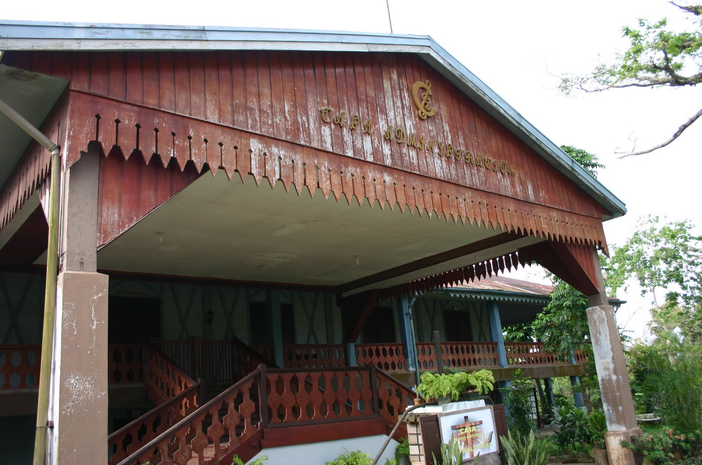
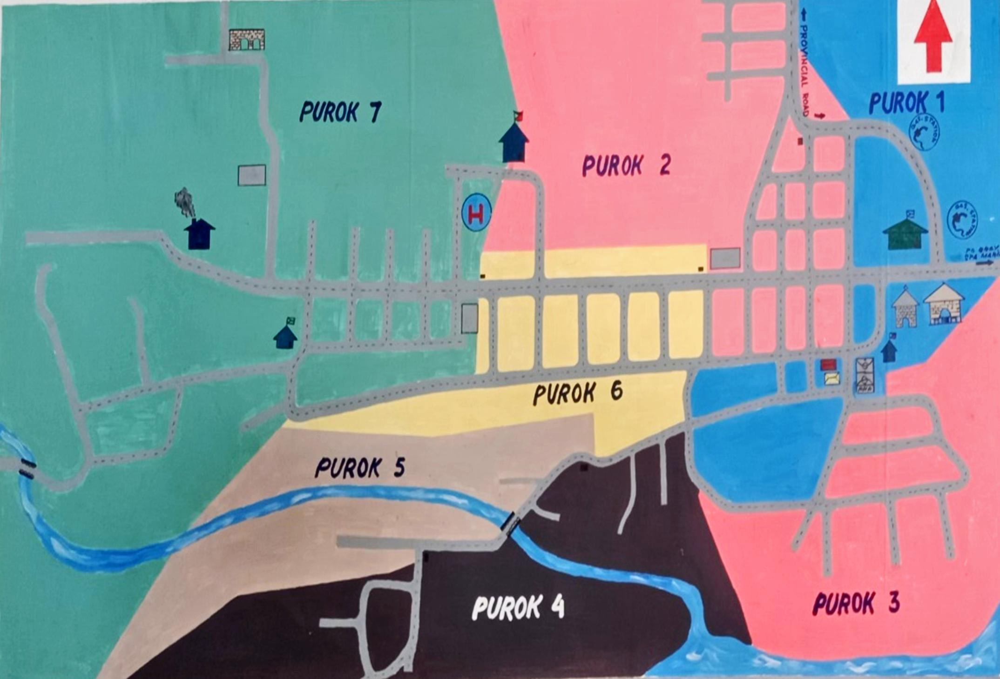

About Us
History of Barangay Centro San Antonio

Barangay Centro San Antonio, the heart of the San Antonio Region, was founded by Spaniards
in 1881 as Hacienda San Antonio under the Compañia General de Tabacos de Filipinas, also
known as Tabacalera. The hacienda spanned over 7,000 hectares and was divided into 27
cabecerías. Initially, the main crop was tobacco, but tenants were later allowed to plant other
crops like rice and corn. The hacienda provided various benefits to tenants, including medical aid and
cash advances, and celebrated St. Anthony's feast day with public festivities. After a century, the hacienda
was sold to ANCA Corporation and later transferred to the Philippine government, which distributed the
land to the residents through the Land Reform Program.
Centro San Antonio, formed from several cabecerías, became
the largest barangay in the region with a land area of 994.1468 hectares and a
population of 4,664. The barangay has seen significant development over the years,
including the construction of hospitals, water systems, schools, roads, and various community
facilities. The residents continue to uphold traditional Filipino customs and religious practices,
such as the pamanhikan and the celebration of Holy Week. The barangay also hosts the annual Patronal
Fiesta, attracting residents from across the region for religious and recreational activities.
Under the leadership of various Punong Barangays, including the notable Epifania T. Molina, Centro San
Antonio has achieved numerous awards for its outstanding governance and community initiatives.
Recent developments include the improvement of infrastructure, establishment of street names, and promotion
of organic farming practices. Hon. Nestor T. Tamulto, the current Punong Barangay, aims to continue this legacy
of development with the support of the Sangguniang Barangay and the residents. The barangay's progress is
evident in its thriving economy, modern amenities, and active community participation.
Development Thrusts
Mission
To improve the quality of life of the people and ensure a safe and peaceful community through active people’s participation in the efficient and effective delivery of basic services.
Vision
Barangay Centro San Antonio: The premier producer of Vermi Fertilizer in the City of Ilagan with God-loving, healthy and self-reliant people living in a safe, peaceful and friendly environment with progressive economy led by dedicated, transparent and accountable officials.
Profile of the Barangay
Physical Information
- Geographical Location
- North: Barangays Fugu and Ballacong
- South: Barangay Yeban Sur
- East: Barangays Sindon Bayabo, Paliueg and Villa Imelda
- West: Barangays Gayong-gayong Sur and Norte, Salindingan
Barangay Centro San Antonio is more or less 17 kilometers from Centro/Poblacion bounded by the following barangays:
- Type/Classification of Barangay:
- __x__ Rural
- __x__ Upland
- __x__ Agricultural
- __x__ Fishing
- __x__ Commercial
- Population: 5,095
- Total Land Area in hectares: 994.1468
- Residential : 159.0300 has.
- Agricultural: 313.8700
- Commercial : 5.0200
- Others : 516.2268
Political Information
- Legal basis of creation: Presidential Decree No. 557-1974
- No. of Registered Voters: 2,556
- No. of Precincts: 14
Map of Centro San Antonio Ilagan City
